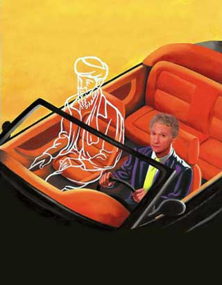

|

When you ride ALONE you ride with bin Laden #2
What the government should be telling us to help fight the war on terrorism.
- - - - - - - - - -
by Bill Maher
The second installment of sampling of essays from the marvelous book of the same name, written by the funniest social and political satirist since Mark Twain.
Installment index
"The Man" in the Sky
AVING ALWAYS DEFINED POLITICAL CORRECTNESS as the elevation of sensitivity over truth, and being an optimist, I guessed that after 9/11, Americans would judge all matters "PC" to be an indulgence herewith unaffordable. Boy, was I wrong.
Which is bad, because political correctness is much more dangerous now than it was before 9/11. What were once the kind of lies we told to spare anyone's "feelings" from ever getting bruised are now revealed as blind spots in our rationale, inhibiting our ability to fully grasp our predicament.
And there's nothing more politically correct than pretending religion is always a good thing. Saying someone is religious is heard in most of America as a compliment, a reassuring affirmation that someone will be moral, ethical and, after a few glasses of wine, a freak in the bedroom.
People say "I'm a Christian" the way certain politicians say "I have integrity," like we're all supposed to be impressed and back off and kneel down to that almighty testament to naivete and hypocrisy. When people brag that they have religious faith, I hear "stupidity." Faith is saying, "I will ignore my God-given gifts for discerning reality and instead throw my lot in with blind belief in something that was forced into my head before I could even think."
Isn't that how we get adults in this world who fight wars based on which contrived fairytale they were brought up on? Which desert mirage they were programmed to see -- the magic apple and the talking bush or the flying horse and circling the black rock?
But hey, "You have to respect people's religion!"
Why? I don't respect thinking that is dangerous, prejudicial, childish and could get me killed. And to pretend, as we are apparently supposed to, that the terrorism we face today is not about religion is like saying AIDS in America has no relation to homosexuality. It'll get you applause on Oprah, but it's not true. Also an applause line but complete bullshit is "this is not a clash of civilizations." Of course it is, as every major war is. The Civil War was a clash of civilizations, and we didn't even leave the county.
To hear people the week after 9/11 constantly talking up the need for more faith and the importuning of our God was, to me, the very definition of being part of the problem." Of course, we in the West like to pat ourselves on the back and say we're more tolerant, and we are -- but tolerance is not the same thing as acceptance. It just means, "We think you're crazy and going to hell, but we won't kill you for it -- we'll tolerate you. But you don't know who the Man in the Sky is, and we do."
To pretend, as we are apparently supposed to, that the terrorism we face today is not about religion is like saying AIDS in America has no relation to homosexuality. It'll get you applause on Oprah, but it's not true.
|
Our own president said during the 2000 campaign that he didn't believe one could get into heaven if not a Christian. He had to backpedal on it because non-Christians vote, but millions of Christians who aren't running for anything would endorse that view wholeheartedly.
And why wouldn't they, since they treat the Bible like it's some kind of... bible, and in it there are the words: "I am the way, the truth, and the life: and no man cometh unto the Father but by me." Not a lot of wiggle room there. Put that next to "There is no god but Allah, and Mohammed is his prophet," and it's pretty much "pick a side." One lane open on the highway to heaven.
Of course, when you shut off your brain from rational analysis, any book is dangerous. Taking literally ancient parables from thousands of years ago is much more dangerous than playing with a loaded gun. Ancient scrawls, written by different authors in different centuries with different agendas -- yeah, let's get mad-literal about that.
The literalness problem is compounded in religion by the circular logic of not being allowed to question anything, or else you're lacking faith. Christianity and Islam both have strict bans on of any sort of questioning of the religion itself -- or, as the wizard once put it, "Pay no attention to the man behind the curtain! " In the Bible, it's "Don't eat from the Tree of Knowledge," but the meaning is the same: "The stuff we're telling you is going to seem crazy, but just buy it."
Imagine being able to sell any other product like that -- by insisting the customer swallow every word you spoke about it as gospel or else he'd burn in hell. Where you, as the customer, having been brainwashed from birth about the superiority of the product, upon reaching thinking age, forfeit the benefits of the product if you doubt it in any way, and the claims of the product cannot be tested until after you're dead.
Maybe that's why "Religion" is a magic word that allows priesthoods to do anything they want to people. The Taliban kept their women in beekeeper suits. The Catholics got away with fucking kids!
If Islam was seen as an ideology instead of a religion, it'd be easy to point a finger in the face of the enemy. But with a religion, no matter how vicious, it gets a little touchy, because, again, we'd hate to come off as intolerant. So we'd like to make it clear that this is a war on terror, and there's no need for us to go digging into exactly where all the hate is coming from.
But, if you must know, it's coming from the Koran or, more accurately, a conveniently literal interpretation of the Koran that informs the impoverished and the frustrated and the humiliated of their righteous duty to strike out, to kill, to wage jihad in the name of their God. The Koran's "Wherever you are, death will find you out, even if you are in towers built up strong and high," does not mean "fly planes into buildings" any more than the story of the tortoise and the hare means "rabbits are losers" -- but it's religion, so we have to respect that, and take it literally.
My personal savior is common sense. And as far as God goes, I prefer to believe in one that would want me to use the excellent brain he gave us all.
 Next page | The Kitchen is Closed Next page | The Kitchen is Closed
1, 2, 3
|